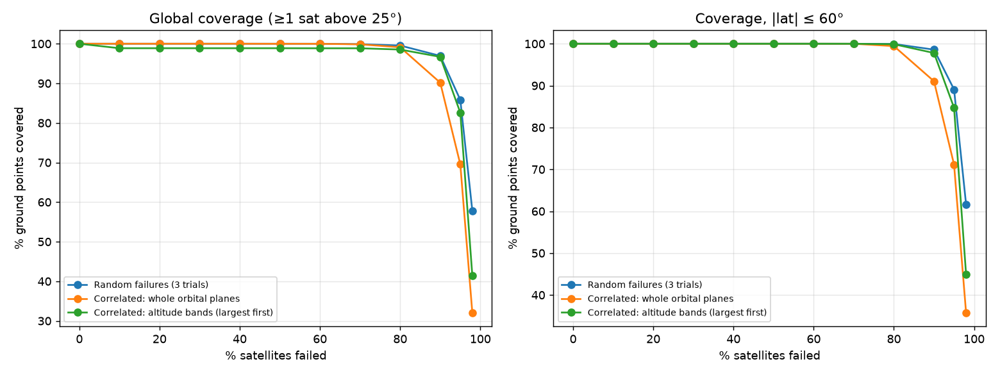
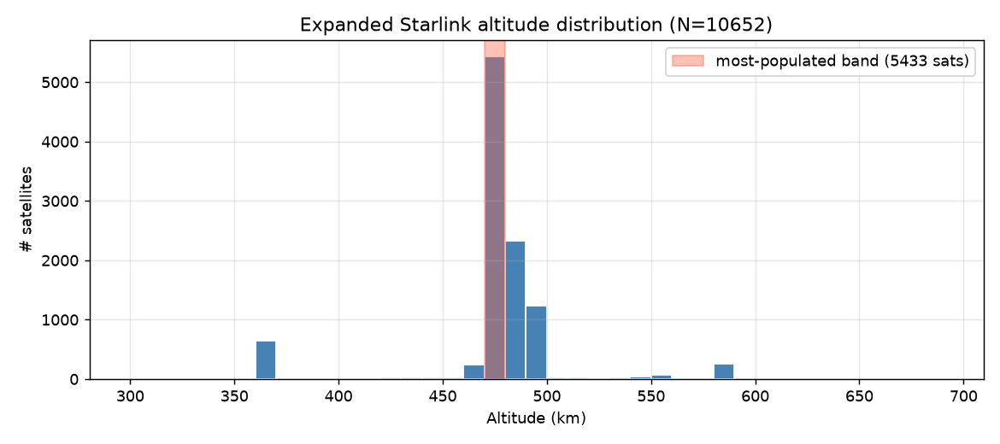
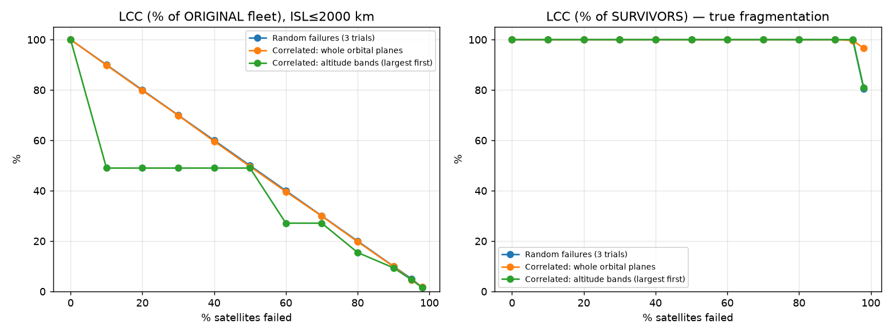
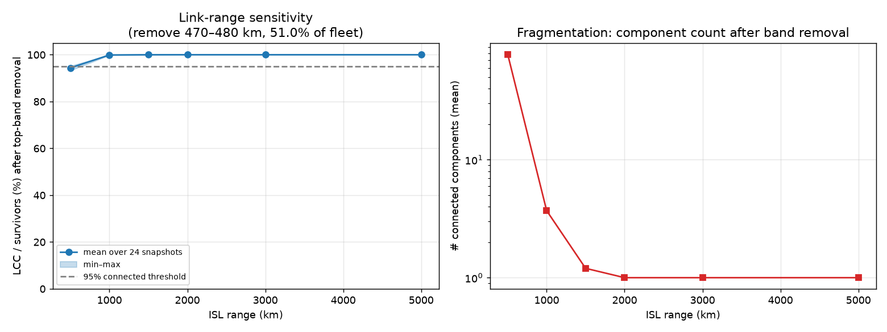
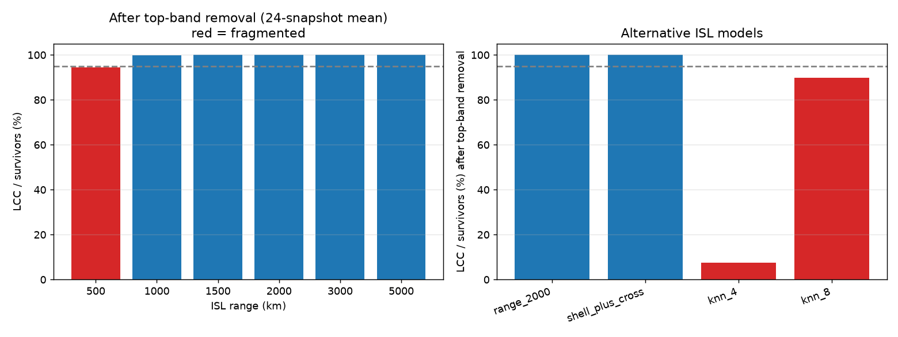
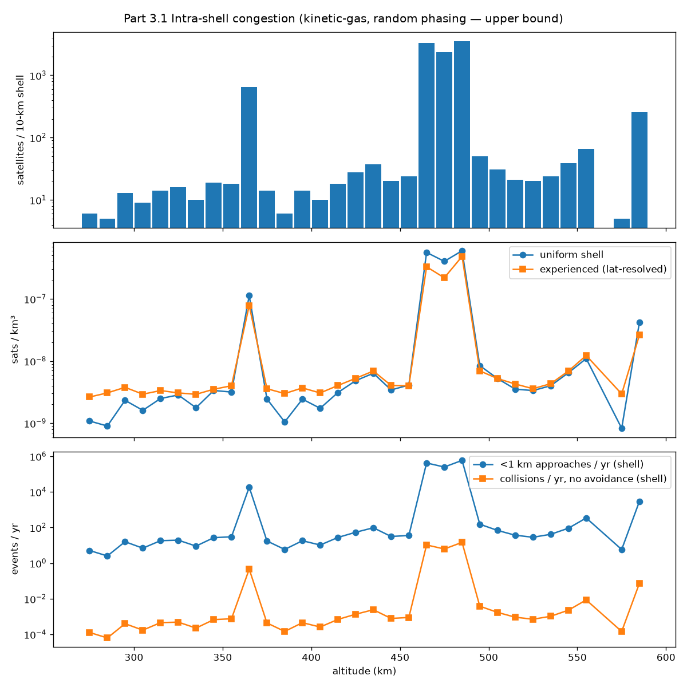
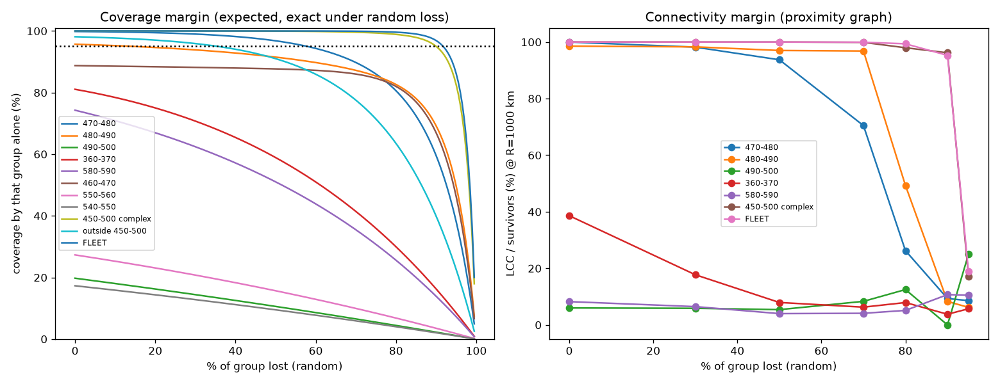
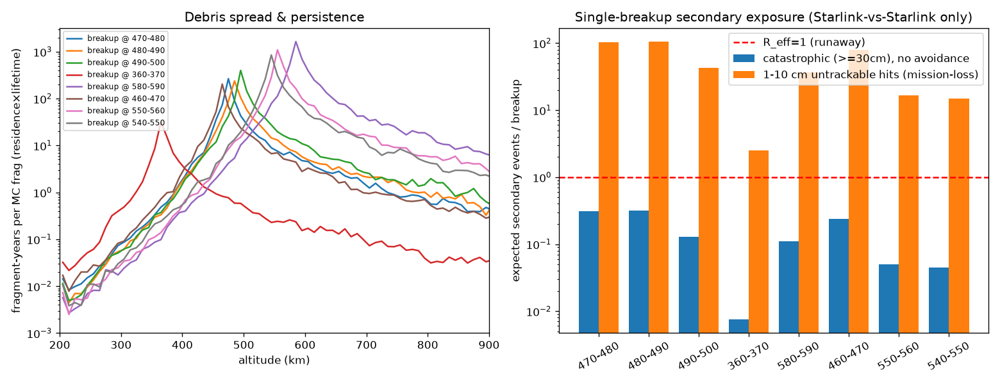
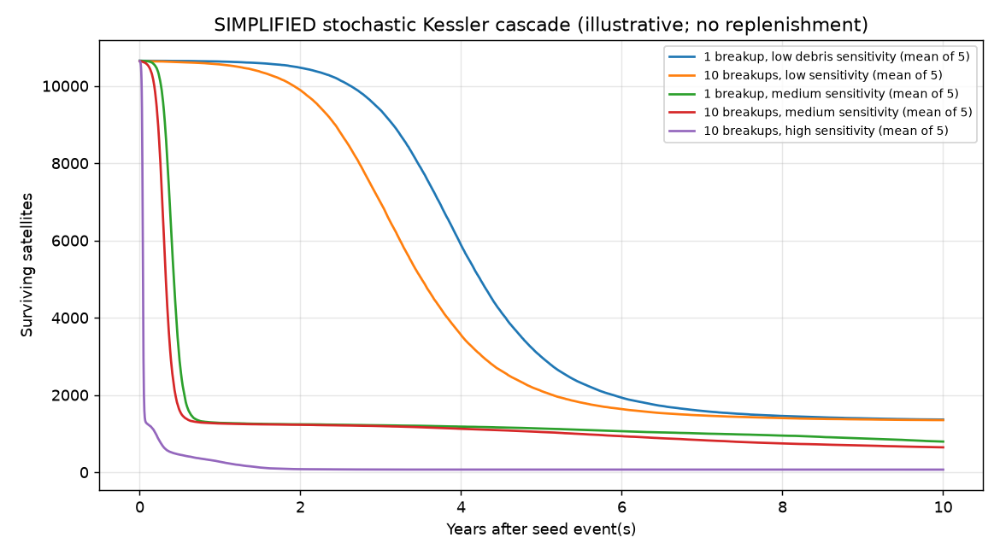
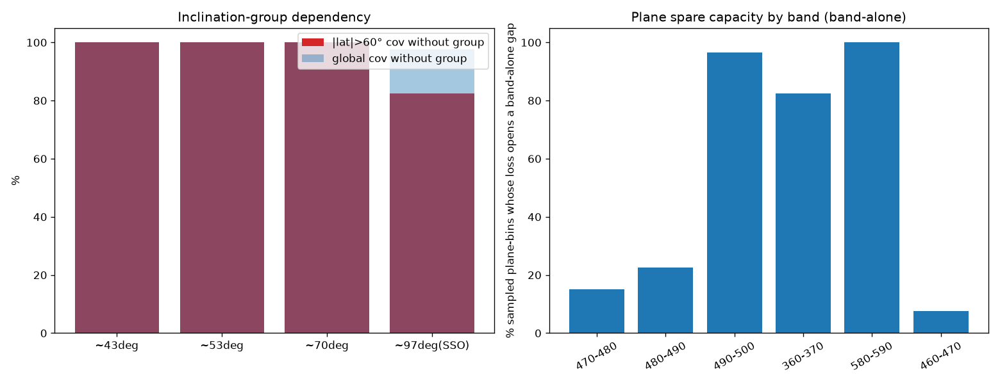

Snapshot 2026-10-17 · 10,652 public Starlink TLEs (CelesTrak) · Consolidated findings from analysis Parts 1–3
Scope. A defensive resilience and space-safety study built only on public data. It contains no targeting, no attack optimisation and no de-anonymisation. All results are aggregated by altitude shell or inclination group.
Executive summary
100%global coverage at 25° mask, ~45 sats in view
~85%random loss before coverage drops below 99%
1 componentsurvivors stay connected at ISL range ≥1,000 km
~97%of modelled encounter rate in 460–490 km shells
Reff < 1no runaway cascade (≤0.32 per breakup, no avoidance)
82.5%coverage poleward of 60° without the ~97° polar group
Coverage is extremely robust. The fleet covers 100% of the globe at a 25° elevation mask, with about 45 satellites in view per ground point. Under random loss, coverage stays above 99% until about 85% of satellites are lost; it drops below 95% at about 92% loss and below 90% at about 94.5%.
Correction: the earlier “altitude-band fragmentation” finding was an artifact. It measured the largest connected component (LCC) as a share of the original fleet instead of the survivors. Measured correctly with realistic link ranges (≥1,000 km), the surviving satellites stay one connected component, even after removing the most populated 10-km band (51% of the fleet). Real fragmentation appears only at a 500-km link range or with very local k-nearest-neighbour link models.
The real risk is congestion in the 460–490 km shells. These three shells are 10–100× more congested than any other altitude and carry ~97% of the modelled close-encounter rate.
No runaway Kessler cascade in the dense shells. Drag clears debris below 500 km within months (median fragment life 0.07–0.12 yr). One breakup yields fewer than one catastrophic secondary collision (≤≈0.32 with no avoidance, ≈0.016 with 95% avoidance). Debris at 580–590 km lasts about 10× longer (median 0.72 yr).
The biggest redundancy gap is the polar (~97°) group (1,355 satellites). Without it, coverage poleward of 60° falls from 100% to 82.5%, and mean satellites in view there drop from 20 to 6.5.
The main residual hazard is small, untrackable debris. 1–10 cm fragments cannot be avoided; the model gives about 10² mission-degrading hits per breakup (an upper bound).
Overall confidence:High on coverage robustness and the artifact correction. Medium on connectivity (link graphs are proxies for the real laser mesh). Low–medium on absolute collision and cascade numbers — the shell ranking is the robust result.
About 87% of the fleet sits in the 450–500 km complex, with smaller groups at ~350–400 km and ~550–600 km.
Losing whole planes is the harshest pattern, but only at extreme loss: at 95% failure, coverage is 69.5% under plane loss vs 85.8% under random loss.

Coverage vs. fraction failed, by failure mode.

Altitude distribution of the fleet (single-instant altitudes). Most satellites sit in the 450–500 km complex.
2. Connectivity & the fragmentation-artifact correction
Part 2 stress test · proximity inter-satellite-link (ISL) graph
Correction. The v1 claim (“removing 470–480 km drops LCC to ~49%”) divided by the original fleet size. Removing a band holding 51% of satellites forces that number to ~49% whether or not the network splits. Re-measured against survivors, the network stays one component at every link range ≥1,000 km.
Removing the most populated 10-km band (470–480 km, 51.0% of the fleet), LCC measured as a share of survivors:
ISL range
LCC / survivors (mean)
Mean # components
Fragmented?
500 km
94.4%
78.5
Yes
1,000 km
99.9%
3.7
No
1,500 km
100.0%
1.2
No
2,000 / 3,000 / 5,000 km
100.0%
1.0
No
At 2,000 km, ~313k inter-shell links exist before the band is removed and ~139k remain afterwards. Survivors stay fully connected at all 12 persistence snapshots.
Removing altitude bands cumulatively, up to 90.6% of the fleet, still leaves LCC / survivors = 1.000 at 2,000 km.
Model caveat: sparse k-NN graphs do fragment after the dense band is removed (LCC / survivors 7.4% for k = 4, 89.9% for k = 8). This matters only if the real laser mesh is highly local; it does not revive the earlier “2,000-km split” claim.

Connectivity vs. failures (LCC as a share of survivors).

Link-range sensitivity: fragmentation only appears at 500 km.

Fragmentation metrics after removing the densest band.
3. Shell congestion & collision risk
Part 3 · kinetic-gas encounter rates per 10-km shell (orbit-averaged altitudes), hard-body radius 5 m, close-approach sphere 1 km
Shell (km)
Sats
Density (sats/km³)
Mean vrel (km/s)
<1 km approaches / sat / yr
Collisions / shell / yr*
480–490
3,526
4.8e-7
6.9
~333
~14.7
460–470
3,297
3.3e-7
7.8
~255
~10.5
470–480
2,376
2.2e-7
9.7
~210
~6.2
360–370
645
7.8e-8
7.4
~57
~0.46
580–590
255
2.6e-8
8.9
~23
~0.07
others
≤66 each
≤1.2e-8
—
≤10
≤0.03
* No coordination and no avoidance — an upper bound that shows why active avoidance is essential, not a forecast.
The 460–490 km shells are one to two orders of magnitude more congested than anywhere else, hold ~87% of the fleet and carry ~97% of the modelled encounter rate.
470–480 km has the highest relative velocity because it mixes 43°, 53°, 70° and 97° planes.
Satellites in the same shell are phased by design and actively manoeuvre, so real rates are far lower.

Congestion by 10-km shell.
4. Graceful-degradation margins
Part 3 · expected coverage under random loss computed exactly as 1 − fk
Group
Baseline coverage
Mean in view
Random loss tolerated before <99% / 95% / 90%
Whole fleet
100%
45.3
85.5% / 92% / 94.5%
450–500 complex alone
100%
40.1
79.5% / 90.5% / 93%
Everything outside 450–500
98.1%
5.1
0% / 36% / 52.5%
470–480 alone
99.8%
10.2
30% / 58% / 70%
480–490 alone
95.7%
15.8
— / 14.5% / 59%
460–470, 360–370, 580–590 alone
89% / 81% / 74%
13.8 / 1.8 / 1.5
below 90% to start with
The margin comes from the 450–500 km complex as a whole; no single 10-km band provides it alone.
The whole fleet stays ≥95% connected up to 90% random loss at a 1,000-km link range, and 100% connected at 2,000 km. Small shells on their own (360–370, 490–500, 580–590) are already fragmented at 1,000 km.

Coverage vs. random loss for the whole fleet and individual shell groups.
5. No runaway cascade: breakup → secondary-collision exposure
Part 3 · NASA Standard Breakup Model, one catastrophic breakup of an 800-kg satellite (~118 fragments ≥30 cm, 771 ≥10 cm, ~39.6k ≥1 cm)
Breakup band (km)
Median fragment life
Catastrophic secondaries (≥30 cm), no avoidance
…with 95% avoidance
1–10 cm untrackable hits
480–490
0.12 yr
0.32 (P ≈ 27%)
0.016
~105
470–480
0.08 yr
0.31 (P ≈ 27%)
0.016
~102
460–470
0.07 yr
0.24 (P ≈ 21%)
0.012
~79
490–500
0.14 yr
0.13
0.007
~43
580–590
0.72 yr
0.11
0.006
~36
540–560
~0.4 yr
~0.05
~0.002
~15
360–370
0.014 yr
0.008
0.0004
~2.5
Reff (catastrophic secondaries per breakup) is below 1 in every band, so the model shows no runaway cascade from breakups within the fleet. The main reason is atmospheric drag below 500 km.
~80% of fragments leave their parent 10-km shell; a breakup anywhere in 460–500 km exposes all three dense shells.
580–590 km holds few satellites, but its debris persists ~6–10× longer than in the dense shells and reaches more non-Starlink traffic (not counted here).
Threshold sensitivity. If every ≥10 cm fragment were counted as catastrophic, the no-avoidance Reff in the dense shells would be ~2.0–2.1 (above 1); with 95% avoidance it would be ~0.10. The “no runaway” conclusion therefore depends on the ≥30 cm lethality threshold and on active avoidance.

Fragment lifetimes and secondary-collision exposure per breakup band.

Part 1 Kessler curves — illustrative only, uncalibrated, and highly sensitive to an arbitrary “debris sensitivity” setting. Superseded by the Part 3 breakup model above.
6. Redundancy gap: the polar (~97°) group
Part 3 · coverage with one inclination group removed
Inclination group removed
Sats
Global coverage
Coverage poleward of 60°
Mean in view poleward of 60° (baseline 20.2)
~43°
3,613
100%
100%
20.2
~53°
4,976
100%
100%
20.2
~70°
708
100%
100%
13.8
~97° (polar / SSO)
1,355
97.7%
82.5%
6.5
Polar and high-latitude service is the clearest gap — it depends on a single inclination group.
Plane-level spare capacity (each band alone): in 470–480 km only 15% of sampled planes open any hole when lost (worst 0.2% of grid). In the thin shells, 82.5% of planes do in 360–370 km and 100% in 580–590 km (worst 3.7%). The whole fleet still covers all of those holes.

Coverage impact of removing each inclination group, globally and poleward of 60°.
7. Corrections made during the analysis
Altitude-band “fragmentation” withdrawn — denominator was the original fleet, not survivors (see §2).
Catastrophic-fragment threshold set to ≥30 cm (~40 J/g on an 800-kg satellite at 8–10 km/s). 10–30 cm hits are reported as tracked/avoidable; 1–10 cm as untrackable/mission-degrading.
Altitude binning reconciled. Parts 1–2 use single-instant altitudes (5,433 sats in 470–480 km); Part 3 uses orbit-averaged altitudes (460–470: 3,297; 470–480: 2,376; 480–490: 3,526). The 450–500 km totals agree (9,270 vs 9,273).
Part 1 Kessler model demoted to an illustration, replaced by the Part 3 physics-based breakup model.
Part 2 re-run on a lighter setup (20-min steps, 6 snapshots) after the full run ran out of memory; headline numbers match Part 1.
8. Confidence & limitations
Finding
Confidence
Why
Coverage stays >99% until ~85% random loss
High
Geometry from public TLEs, exact analytic formula
Fragmentation claim was an artifact; survivors stay connected at ≥1,000 km
High proxy · Medium real mesh
Laser links are proprietary; k-NN results show sensitivity to the link model
460–490 km shells dominate congestion (ranking)
High
Follows from where the satellites are
Absolute encounter and collision rates
Low (upper bounds)
Random-phasing assumption; real phasing and avoidance cut them heavily
Reff < 1, no runaway cascade within the fleet
Medium
Depends on the ≥30 cm threshold, the 5-m hard-body radius (10 m ×4 → ~1.3 with no avoidance) and solar activity (lifetimes vary 3–5×)
Polar (~97°) group is the main redundancy gap
High
Clear geometric effect at high latitudes
~10² untrackable 1–10 cm hits per breakup
Low–Medium
Order of magnitude only; same random-phasing caveat
Limitations
Public TLEs only, propagated with SGP4 on a spherical Earth.
Coverage is a geometric 25° mask, not service: no capacity, beam or gateway model.
Connectivity uses proximity or k-NN proxies; it ignores Earth occlusion, pointing limits and routing.
Only Starlink-vs-Starlink debris exposure is modelled. Other operators, rocket bodies, the existing debris background and the 500–1,000 km debris belt are excluded — this is not a full Kessler assessment.
Lifetime model is a one-parameter exponential; fragment orbits stay fixed until decay (no gradual descent through lower shells).
Avoidance (95%) applies only to tracked objects (≥10 cm).
Parts 1–2 and Part 3 bin altitudes differently.
Appendix: Methods
Item
Approach
Catalog
CelesTrak public GP data (Starlink group, active catalog Starlink entries, supplemental elements), deduplicated by NORAD ID → 10,652 satellites.
Propagation
SGP4, spherical Earth (R = 6,371 km). Part 1: 15-min steps, 24 hourly connectivity snapshots. Part 2: 20-min steps, 6 snapshots. Part 3: orbit-averaged altitudes (12 samples over ~one orbit).
Coverage
Fibonacci ground grid (2,000 pts Parts 1–2; 1,500 pts × 4 snapshots Part 3). Covered if ≥1 satellite ≥25° above the horizon. Part 3 random-loss coverage computed exactly as 1 − fk.
Random loss; whole orbital planes (1° inclination × 5° RAAN bins); whole 10-km altitude bands, largest first.
Congestion
Kinetic-gas encounter rates per 10-km shell, latitude-resolved density, mean relative velocity, random phasing (upper bound). Hard-body radius 5 m; close-approach sphere 1 km.
Breakup / cascade
NASA Standard Breakup Model, one catastrophic breakup of an 800-kg satellite; isotropic Δv; per-shell residence time. Lifetime τ = 3 yr · (0.01 / (A/m)) · exp((hp − 475) / 55). Exposure counted against Starlink satellites only.